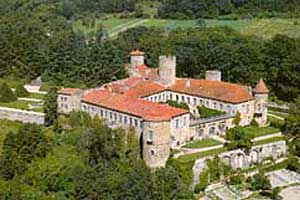
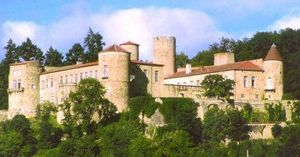
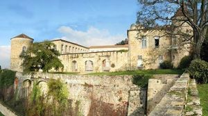
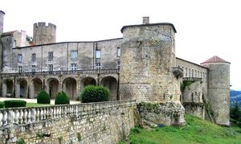
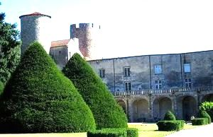
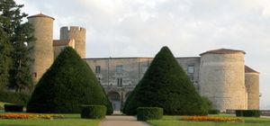
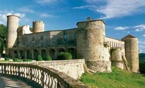
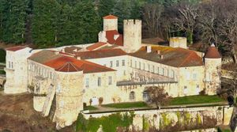

Recensement Jean-Claude Truffet
| Département | 63 — Puy-de-Dôme |
| Canton | Vertaizon |
| Commune | Ravel-Lezoux |
| Type d'édifice | Forteresse |
| Période d'origine | XII-XVIII |








RAVEL, cité en 1147, son premier occupant fut Pierre de Ravel. Entre 1241 et 1271 le comté d'Auvergne avait été donné en apanage à Alphonse de Poitiers, c'est au début du XIIIe siècle que le château est agrandi, à la suite de la prise de l'Auvergne par Philippe Auguste. En 1283 Chatard de Ravel vend la seigneurie au roi Philippe III le Hardi. Propriété royale sous Philippe III le Hardi et Philippe IV le Bel, il fut donné en mai 1294 à Pierre Flotte pour le récompenser de ses service, Il eut de son mariage avec Flandrine de Châtillon-en-Bazois deux enfants, Françoise de Flotte et Guillaume de Flotte de Ravel, sénéchal de Toulouse avant de devenir lui aussi, en 1339, chancelier de France. Le fils de Guillaume, Pierre, mourut avant lui, après avoir eu de sa femme Marguerite de Chatillon un fils prénommé Guillaume. Sa fille Jeanne n'ayant pas eu d'enfant, elle laissa à sa mort en 1431 la seigneurie à André de Chauvigny. La fille d'André de Chauvigny, Catherine, l'apporta par son mariage en 1460 à Charles d'Amboise. Guy, issu de leur union, n'a eu qu'une fille, Antoinette d'Amboise, veuve de son cousin Jacques d'Amboise, mariée en 1518 à Antoine de la Rochefoucauld, seigneur de Barbezieux, sénéchal d'Auvergne, fils de François Ier de La Rochefoucauld et de Louise de Crussol. À la Renaissance la famille de Combourcier du Terrail. Leur quatrième fils, François, seigneur de Ravel en 1549, eut trois filles de son union avec Éléonore de Vienne. En août 1584, Gilberte, une de leurs filles en 1647 épousa Jean IV d'Estaing marquis de Saillans qui fit rentrer le château dans cette famille. A la mort de Charles-Henri-Théodat, comte d'Estaing, amiral guillotiné en 1794 pas d'enfant, revient par héritage à une demi-soeur la marquise de Boysseulh qui le vendit en 1806 et une partie de son mobilier et des souvenirs des d'Estaing à Charles de Riberolles-Beaucène, dont les héritiers le firent protéger en 1958, le possèdent encore et l'entretiennent. A ce jour, les Brochot et Ramos descendants de cette famille en reste toujours propriétaire.
Cette puissante forteresse de Ravel quadrangulaire irrégulier du XIIe siècle donjon roman circulaire du XIIIe siècle et ses cinq tours, dont une octogonale, fut embellie fin XVIIIe siècle par l'amiral d'Estaing, qui laissa son empreinte de nombreux souvenirs de marine. La transformation en demeure seigneuriale classique au XVIIIe siècle a respecté l'ossature gothique et la grande façade sur cour s'appuie sur les tours médiévales. La galerie d'entrée, l'escalier et la salle à manger au rez-de-chaussée, la grande galerie et le salon de musique au premier étage sont des pièces d'ordonnance classique.
Le château remanié aux cours des ans, la chapelle, les terrasses avec leurs murs de soutènement et le petit parc ont été classés MH le 2O mai 1958.
Famille de Pierre de Ravel Famille d'André de Chauvigny
"
Château de Ravel